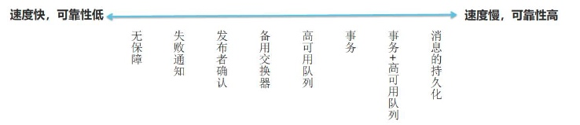
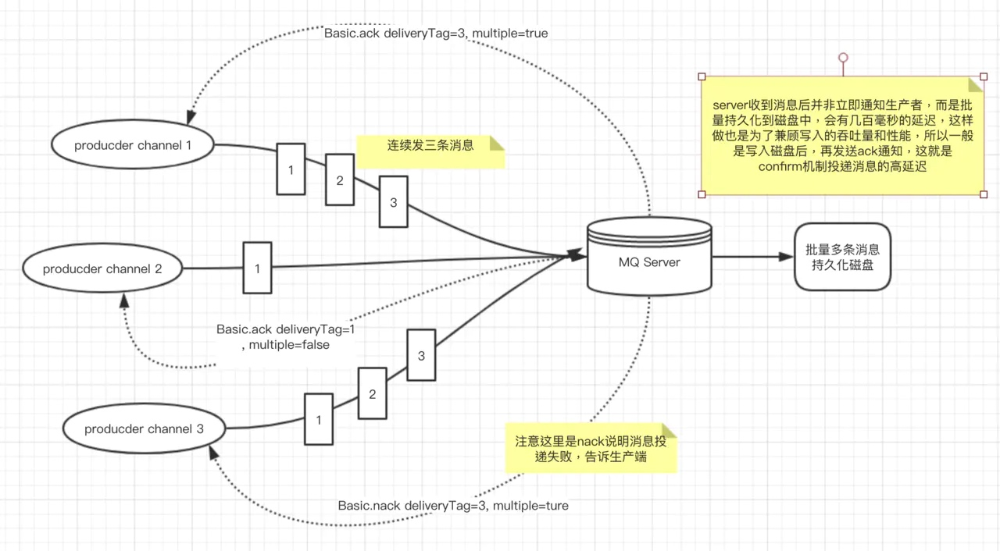

在 RabbitMQ 中，有不同的投递机制(生产者)，但是每一种机制都对性能有一定的影响。一般来讲速度快的可靠性低，可靠性好的性能差，具体怎 么使用需要根据你的应用程序来定，所以说没有最好的方式，只有最合适的方式。只有把你的项目和技术相结合，才能找到适合你的平衡。

在 RabbitMQ 中实际项目中，生产者和消费者都是客户端，它们都可以完成申明交换器、申明队列和绑定关系，但是在我们的实战过程中，我们在生产者代码中申明交换器，在消费者代码中申明队列和绑定关系。
另外还要申明的就是，生产者发布消息时不一定非得需要消费者，对于 RabbitMQ 来说，如果是单纯的生产者你只需要生产者客户端、申明交换器、 申明队列、确定绑定关系，数据就能从生产者发送至 RabbitMQ。
无保障
通过 basicPublish 发布你的消息并使用正确的交换器和路由信息，你的消息会被接收并发送到合适的队列中, 但是如果有网络问题，或者消息不可路由，或者RabbitMQ 自身有问题的话，这种方式就有风险。所以无保证的消息发送一般情况下不推荐。
失败确认
在发送消息时设置 mandatory = true 标志，告诉 RabbitMQ，如果消息不可路由，应该将消息返回给发送者，并通知失败。可以这样认为，开启 mandatory 是开启故障检测模式。
注意:它只会让 RabbitMQ 向你通知失败，而不会通知成功。如果消息正确路由到队列，则发布者不会受到任何通知。带来的问题是无法确保发布消息一定是成功的，因为通知失败的消息可能会丢失。
channel.addConfirmListener 则用来监听 RabbitMQ 发回的信息。
事务
事务的实现主要是对信道(Channel)的设置，主要的方法有三个:
- channel.txSelect()声明启动事务模式;
- channel.txComment()提交事务;
- channel.txRollback()回滚事务;
在发送消息之前，需要声明 channel 为事务模式，提交或者回滚事务即可。 开启事务后，客户端和 RabbitMQ 之间的通讯交互流程:
- 客户端发送给服务器 Tx.Select(开启事务模式)
- 服务器端返回 Tx.Select-Ok(开启事务模式 ok) 推送消息
- 客户端发送给事务提交 Tx.Commit
- 服务器端返回 Tx.Commit-Ok
以上就完成了事务的交互流程，如果其中任意一个环节出现问题，就会抛出 IoException，这样用户就可以拦截异常进行事务回滚，或决定要不要重
复消息。
既然已经有事务了，为何还要使用发送方确认模式呢，原因是因为事务的性能是非常差的。根据相关资料，事务会降低 2~10 倍的性能。
发送方确认模式
基于事务的性能问题，RabbitMQ 团队为我们拿出了更好的方案，即采用发送方确认模式，该模式比事务更轻量，性能影响几乎可以忽略不计。
原理:生产者将信道设置成 confirm 模式，一旦信道进入 confirm 模式，所有在该信道上面发布的消息都将会被指派一个唯一的 ID(从 1 开始)，由这个 id 在生产者和 RabbitMQ 之间进行消息的确认。
不可路由的消息，当交换器发现，消息不能路由到任何队列，会进行确认操作，表示收到了消息。如果发送方设置了 mandatory 模式,则会先调用 addReturnListener 监听器。
可路由的消息，要等到消息被投递到所有匹配的队列之后，broker 会发送一个确认给生产者(包含消息的唯一 ID)，这就使得生产者知道消息已经正确 到达目的队列了，如果消息和队列是可持久化的，那么确认消息会在将消息写入磁盘之后发出，broker 回传给生产者的确认消息中 delivery-tag 域包含了 确认消息的序列号。
confirm 模式最大的好处在于它可以是异步的，一旦发布一条消息，生产者应用程序就可以在等信道返回确认的同时继续发送下一条消息，当消息最终得到确认之后，生产者应用便可以通过回调方法来处理该确认消息，如果 RabbitMQ 因为自身内部错误导致消息丢失，就会发送一条 nack 消息，生产者应用程序同样可以在回调方法中处理该 nack 消息决定下一步的处理。
Confirm 的三种实现方式:
- channel.waitForConfirms() 普通发送方确认模式，消息到达交换机，机器会返回 true
- channel.waitForConfirmsOrDie() 批量确认模式，使用同步方式等所有的消息发送之后才会执行后面代码，只要有一个消息未到达交换器就会抛出 IOException 异常
问题：一旦出现confirm返回false或者超时情况时，客户端需要将这一批次的消息全部重发，者会带来重复消息，并且消息经常丢失的时候，批量确认的性能会急剧下降
- channel.addConfirmListener()一步监听发送方确认模式
Channel channel = channelManager.getPublisherChannel(namespaceName);
ProxiedConfirmListener confirmListener = new ProxiedConfirmListener();//监听类
confirmListener.setChannelManager(channelManager);
confirmListener.setChannel(channel);
confirmListener.setNamespace(namespaceName);
confirmListener.addSuccessCallbacks(successCallbacks);
channel.addConfirmListener(confirmListener);
channel.confirmSelect();//开启confirm模式
AMQP.BasicProperties messageProperties = null;
if (message.getProperty() instanceof AMQP.BasicProperties) {
messageProperties = (AMQP.BasicProperties) message.getProperty();
}
confirmListener.toConfirm(channel.getNextPublishSeqNo(), rawMsg);
for(int i = 0;i<50;i++){
channel.basicPublish(
exchange, routingKey,
mandatory, immediate,
messageProperties,
message.getContent()
);
}
package com.rabbitmq.client;
import java.io.IOException;
public interface ConfirmListener {
/**
** handleAck RabbitMQ消息接收成功的方法，成功后业务可以做的事情
** 发送端投递消息前，需要把消息先存起来，比如用KV存储，接收到ack后删除
**/
void handleAck(long deliveryTag, boolean multiple)
throws IOException;
//handleNack RabbitMQ消息接收失败的通知方法，用户可以在这里重新投递消息
void handleNack(long deliveryTag, boolean multiple)
throws IOException;
}

channel1 连续发类1，2，3条消息到RabbitMQ-Server，RabbitMQ-Server通知返回一条通知，里面包含回传给生产者的确认消息中的deliveryTag包含了确认消息的序号，此外还有一个参数multiple=true，表示到这个序号之前的所有消息都已经得到了处理。这样客户端和服务端通知的次数就减少类，提升类性能。
channel3 发送的消息失败了，生产端需要对投递消息重新投递，需要额外处理代码。那么生产端需要做什么事情呢？因为是异步的，生产端需要存储消息然后根据server通知的消息，确认如何处理，于是我们面临的问题是：
- 第一：发送消息之前把消息存起来
- 第二：监听ack 和 nack 并做响应处理
那么怎么存储呢？
我们分析下，可以使用SortedMap 存储，保证有序，但是有个问题高并发情况下，
每秒可能几千甚至上万的消息投递出去，消息的ack要等几百毫秒的话，放内存可能有内存溢出的风险。所以建议采用KV存储，KV存储承载高并发能力高，性能好，但是要保证KV 高可用，单个有个缺点就是又引入了第三方中间件，复杂度升高。